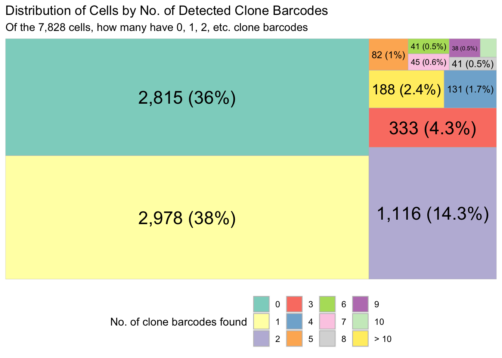

Last updated: 2023-11-13
Checks: 7 0
Knit directory: NextClone-analysis/
This reproducible R Markdown analysis was created with workflowr (version 1.7.0). The Checks tab describes the reproducibility checks that were applied when the results were created. The Past versions tab lists the development history.
Great! Since the R Markdown file has been committed to the Git repository, you know the exact version of the code that produced these results.
Great job! The global environment was empty. Objects defined in the global environment can affect the analysis in your R Markdown file in unknown ways. For reproduciblity it’s best to always run the code in an empty environment.
The command set.seed(20231011) was run prior to running
the code in the R Markdown file. Setting a seed ensures that any results
that rely on randomness, e.g. subsampling or permutations, are
reproducible.
Great job! Recording the operating system, R version, and package versions is critical for reproducibility.
Nice! There were no cached chunks for this analysis, so you can be confident that you successfully produced the results during this run.
Great job! Using relative paths to the files within your workflowr project makes it easier to run your code on other machines.
Great! You are using Git for version control. Tracking code development and connecting the code version to the results is critical for reproducibility.
The results in this page were generated with repository version ca5457a. See the Past versions tab to see a history of the changes made to the R Markdown and HTML files.
Note that you need to be careful to ensure that all relevant files for
the analysis have been committed to Git prior to generating the results
(you can use wflow_publish or
wflow_git_commit). workflowr only checks the R Markdown
file, but you know if there are other scripts or data files that it
depends on. Below is the status of the Git repository when the results
were generated:
Ignored files:
Ignored: .DS_Store
Ignored: .Rhistory
Ignored: .Rproj.user/
Ignored: data/.DS_Store
Ignored: data/cellranger_out/
Ignored: data/nextclone_out/.DS_Store
Note that any generated files, e.g. HTML, png, CSS, etc., are not included in this status report because it is ok for generated content to have uncommitted changes.
These are the previous versions of the repository in which changes were
made to the R Markdown (analysis/sc_data_analysis.Rmd) and
HTML (docs/sc_data_analysis.html) files. If you’ve
configured a remote Git repository (see ?wflow_git_remote),
click on the hyperlinks in the table below to view the files as they
were in that past version.
| File | Version | Author | Date | Message |
|---|---|---|---|---|
| Rmd | ca5457a | Givanna Putri | 2023-11-13 | update |
| html | ca5457a | Givanna Putri | 2023-11-13 | update |
| Rmd | 44218c1 | Givanna Putri | 2023-11-10 | updates |
| html | 44218c1 | Givanna Putri | 2023-11-10 | updates |
| Rmd | 24b5a73 | Givanna Putri | 2023-11-09 | wflow_remove("analysis/sc_data_analysis.Rmd") |
| html | 24b5a73 | Givanna Putri | 2023-11-09 | wflow_remove("analysis/sc_data_analysis.Rmd") |
| Rmd | 1662b0c | Givanna Putri | 2023-10-20 | analysis for ozsinglecell 23 |
| html | 1662b0c | Givanna Putri | 2023-10-20 | analysis for ozsinglecell 23 |
Analysis for scRNA-seq data of MCF7 cell line tagged with ClonMapper protocol.
library(data.table)
library(DropletUtils)
library(CloneDetective)
library(scater)Load data
raw_clone_data <- fread("data/nextclone_out/sc_clone_barcodes_20231109.csv")Convert to expression
cell_by_clone_mat <- generate_cell_clone_barcode_matrix(cell_clone_bcode_dt = raw_clone_data)Incorporate the cell by gene matrix.
sce <- read10xCounts("data/cellranger_out/filtered_feature_bc_matrix")as(<dgTMatrix>, "dgCMatrix") is deprecated since Matrix 1.5-0; do as(., "CsparseMatrix") insteadsceclass: SingleCellExperiment
dim: 36601 7828
metadata(1): Samples
assays(1): counts
rownames(36601): ENSG00000243485 ENSG00000237613 ... ENSG00000278817
ENSG00000277196
rowData names(3): ID Symbol Type
colnames: NULL
colData names(2): Sample Barcode
reducedDimNames(0):
mainExpName: NULL
altExpNames(0):Compute few simple metrics like average library size per cell. Compute total transcript molecules detected per cell then compute average based on the number of cells detected.
cell_qc_metrics <- perCellQCMetrics(sce)
summary(cell_qc_metrics$sum) Min. 1st Qu. Median Mean 3rd Qu. Max.
639 2769 43798 50807 72781 613781 summary(cell_qc_metrics$detected) Min. 1st Qu. Median Mean 3rd Qu. Max.
185 1292 7142 5939 8790 13766 Get the 10x cell barcode.
valid_cells_10x <- colData(sce)$BarcodeTree map to show the proportion of 10x cells that have 0, 1, 2, .. clones found.
plt <- draw_treemap(
cell_by_clone_matrix = cell_by_clone_mat,
valid_cells_bcodes = valid_cells_10x
)
plt
sce_with_clone <- assign_and_embed_clones(
cell_by_gene_mat = sce,
cell_clone_reads_dt = raw_clone_data,
)
colData(sce_with_clone)DataFrame with 7828 rows and 4 columns
Sample Barcode clone_barcode
<character> <character> <character>
1 data/cellranger_out/.. AAACCCAGTAATGCTC-1 NA
2 data/cellranger_out/.. AAACCCAGTATTTCCT-1 NA
3 data/cellranger_out/.. AAACCCAGTTCGGACC-1 GTAATTGATGAGACTGCAAT
4 data/cellranger_out/.. AAACCCATCATCGCCT-1 NA
5 data/cellranger_out/.. AAACCCATCGCCTATC-1 CGAGCTAAGTTTGTCCAGGT
... ... ... ...
7824 data/cellranger_out/.. TTTGTTGAGACGCTCC-1 ACTTTGTCTAGATGTATAGA
7825 data/cellranger_out/.. TTTGTTGCACTCAAGT-1 TAGTCGGGTTGTTACGCGTT
7826 data/cellranger_out/.. TTTGTTGCATCGTCCT-1 TGGTTTCTATTGTCTAGTGC
7827 data/cellranger_out/.. TTTGTTGTCACTCACC-1 NA
7828 data/cellranger_out/.. TTTGTTGTCTTCCTAA-1 NA
clone_barcode_criteria
<factor>
1 no_clones_found
2 no_clones_found
3 single_clone
4 no_clones_found
5 dominant_clone_moreThan_0_5
... ...
7824 dominant_clone_moreThan_0_5
7825 single_clone
7826 single_clone
7827 no_clones_found
7828 no_clones_found Count how many cells assigned to most dominant clones.
clone_bcode_criteria <- as.data.table(colData(sce_with_clone))
clone_bcode_criteria <- data.table(table(clone_bcode_criteria$clone_barcode_criteria))
# proportion. of cells with multiple clone barcodes?
clone_bcode_criteria[, multiclone := ! V1 %in% c("single_clone", "no_clones_found")]
clone_bcode_criteria[, .(prop = sum(N) / sum(clone_bcode_criteria$N)), by = multiclone] multiclone prop
1: TRUE 0.2599642
2: FALSE 0.7400358# proportion of multiclones assigned to most dominant clone?
clone_bcode_criteria[, .(prop = N / sum(N)), by = multiclone] multiclone prop
1: TRUE 0.3395577
2: TRUE 0.6604423
3: FALSE 0.4859313
4: FALSE 0.5140687Export the clone assignments as data.table which can later be saved.
clone_assignments <- assign_and_embed_clones(
cell_by_gene_mat = sce,
cell_clone_reads_dt = raw_clone_data,
embed_to_mat = FALSE
)
head(clone_assignments) CellBarcode CloneBarcode criteria
1: AAACCCAGTTCGGACC-1 GTAATTGATGAGACTGCAAT single_clone
2: AAACGAACATAGATGA-1 GTCATGTCAAGCAGTGGCGT single_clone
3: AAACGCTCAGCGACCT-1 AGACAGGGATGAGATATTCG single_clone
4: AAACGCTGTGTGCCTG-1 GGCCGCAGGTTATACATCAT single_clone
5: AAAGAACGTTGCGGAA-1 ACGTAGATGTAGAGTATGAA single_clone
6: AAAGGATAGAGCATAT-1 AAAGTCCGCTCCCGATAGTT single_clone
sessionInfo()R version 4.2.3 (2023-03-15)
Platform: aarch64-apple-darwin20 (64-bit)
Running under: macOS 14.0
Matrix products: default
BLAS: /Library/Frameworks/R.framework/Versions/4.2-arm64/Resources/lib/libRblas.0.dylib
LAPACK: /Library/Frameworks/R.framework/Versions/4.2-arm64/Resources/lib/libRlapack.dylib
locale:
[1] en_US.UTF-8/en_US.UTF-8/en_US.UTF-8/C/en_US.UTF-8/en_US.UTF-8
attached base packages:
[1] stats4 stats graphics grDevices utils datasets methods
[8] base
other attached packages:
[1] scater_1.26.1 ggplot2_3.4.1
[3] scuttle_1.8.4 CloneDetective_0.1.0
[5] DropletUtils_1.18.1 SingleCellExperiment_1.20.0
[7] SummarizedExperiment_1.28.0 Biobase_2.58.0
[9] GenomicRanges_1.50.2 GenomeInfoDb_1.34.9
[11] IRanges_2.32.0 S4Vectors_0.36.1
[13] BiocGenerics_0.44.0 MatrixGenerics_1.10.0
[15] matrixStats_0.63.0 data.table_1.14.8
[17] workflowr_1.7.0
loaded via a namespace (and not attached):
[1] treemapify_2.5.6 bitops_1.0-7
[3] fs_1.6.1 RColorBrewer_1.1-3
[5] httr_1.4.4 rprojroot_2.0.3
[7] tools_4.2.3 bslib_0.4.2
[9] utf8_1.2.3 R6_2.5.1
[11] irlba_2.3.5.1 vipor_0.4.5
[13] HDF5Array_1.26.0 colorspace_2.1-0
[15] rhdf5filters_1.10.0 withr_2.5.0
[17] gridExtra_2.3 tidyselect_1.2.0
[19] processx_3.8.0 compiler_4.2.3
[21] git2r_0.31.0 cli_3.6.1
[23] BiocNeighbors_1.16.0 DelayedArray_0.24.0
[25] sass_0.4.5 scales_1.2.1
[27] callr_3.7.3 stringr_1.5.0
[29] digest_0.6.31 rmarkdown_2.20
[31] R.utils_2.12.2 XVector_0.38.0
[33] pkgconfig_2.0.3 htmltools_0.5.4
[35] sparseMatrixStats_1.10.0 highr_0.10
[37] fastmap_1.1.0 limma_3.54.1
[39] rlang_1.0.6 rstudioapi_0.14
[41] DelayedMatrixStats_1.20.0 farver_2.1.1
[43] jquerylib_0.1.4 generics_0.1.3
[45] jsonlite_1.8.4 BiocParallel_1.32.5
[47] dplyr_1.1.0 R.oo_1.25.0
[49] RCurl_1.98-1.10 magrittr_2.0.3
[51] BiocSingular_1.14.0 GenomeInfoDbData_1.2.9
[53] Matrix_1.5-3 Rcpp_1.0.10
[55] ggbeeswarm_0.7.1 munsell_0.5.0
[57] Rhdf5lib_1.20.0 fansi_1.0.4
[59] ggfittext_0.10.1 viridis_0.6.2
[61] lifecycle_1.0.3 R.methodsS3_1.8.2
[63] stringi_1.7.12 whisker_0.4.1
[65] yaml_2.3.7 edgeR_3.40.2
[67] zlibbioc_1.44.0 rhdf5_2.42.0
[69] grid_4.2.3 ggrepel_0.9.3
[71] parallel_4.2.3 promises_1.2.0.1
[73] dqrng_0.3.0 lattice_0.20-45
[75] beachmat_2.14.0 locfit_1.5-9.7
[77] knitr_1.42 ps_1.7.2
[79] pillar_1.8.1 codetools_0.2-19
[81] ScaledMatrix_1.6.0 glue_1.6.2
[83] evaluate_0.20 getPass_0.2-2
[85] vctrs_0.5.2 httpuv_1.6.9
[87] purrr_1.0.1 gtable_0.3.1
[89] cachem_1.0.6 xfun_0.39
[91] rsvd_1.0.5 later_1.3.0
[93] viridisLite_0.4.1 tibble_3.1.8
[95] beeswarm_0.4.0